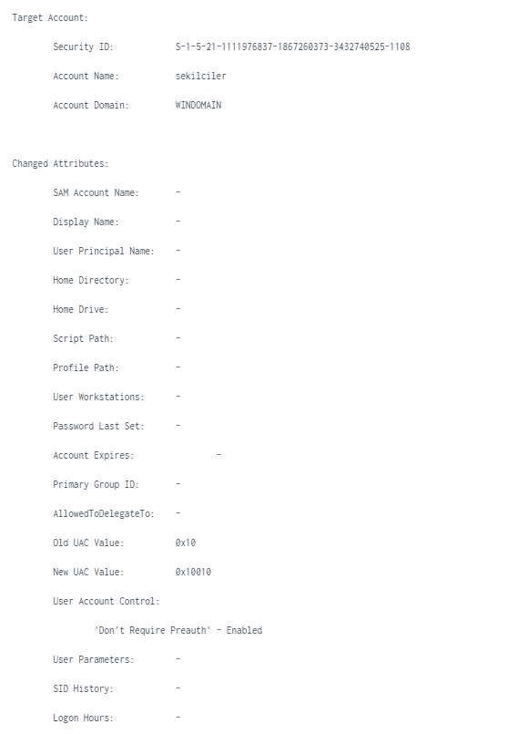
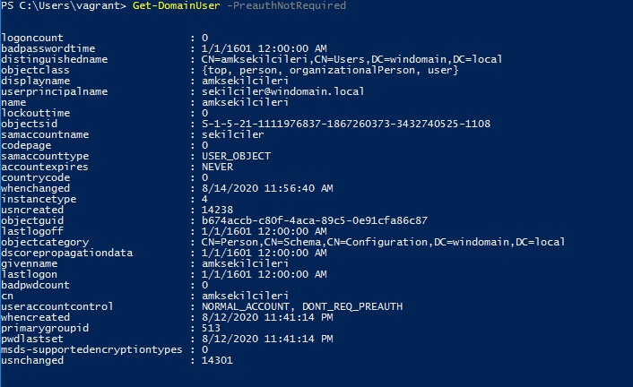
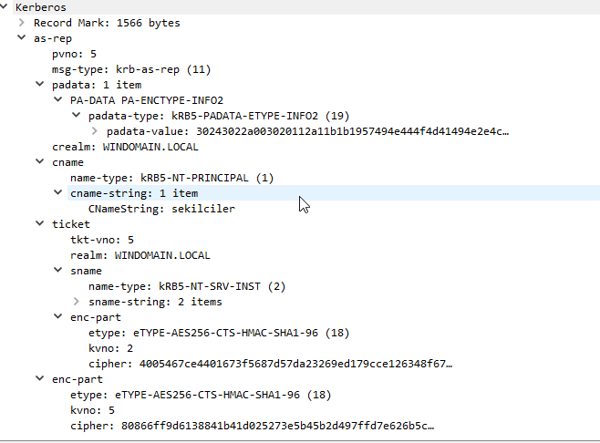
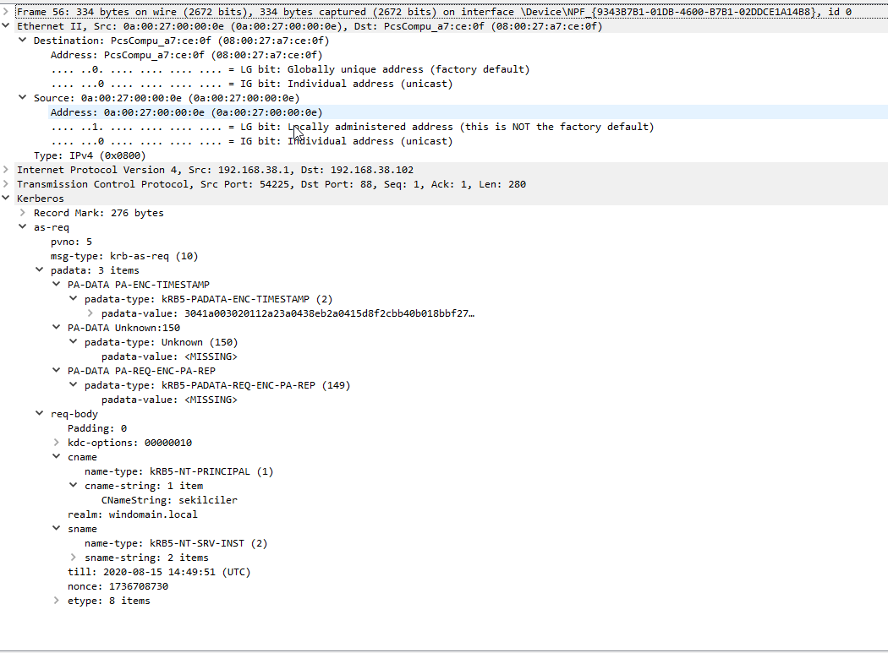
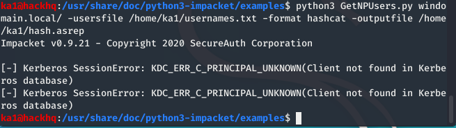
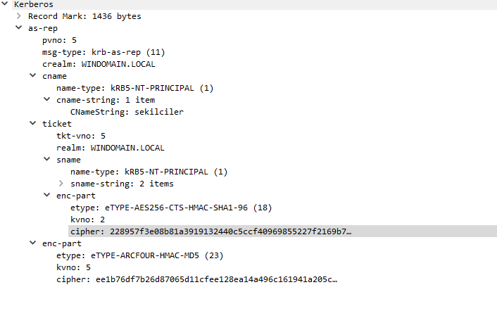
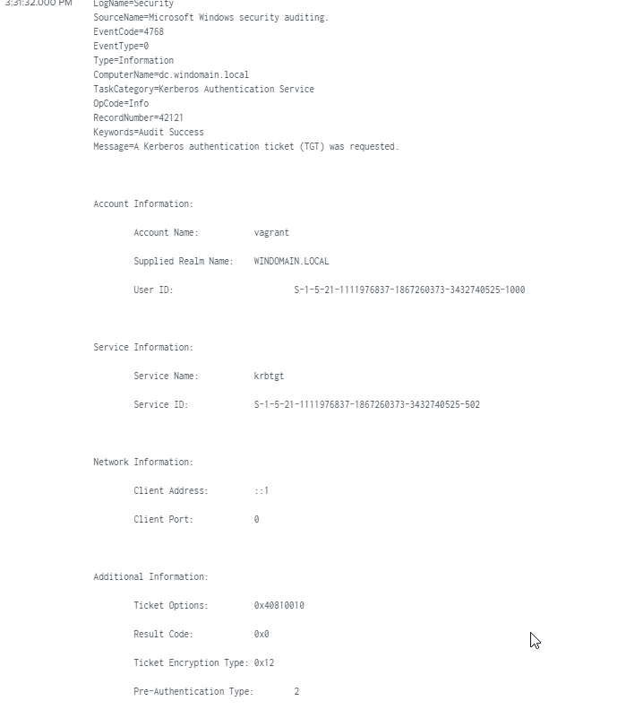
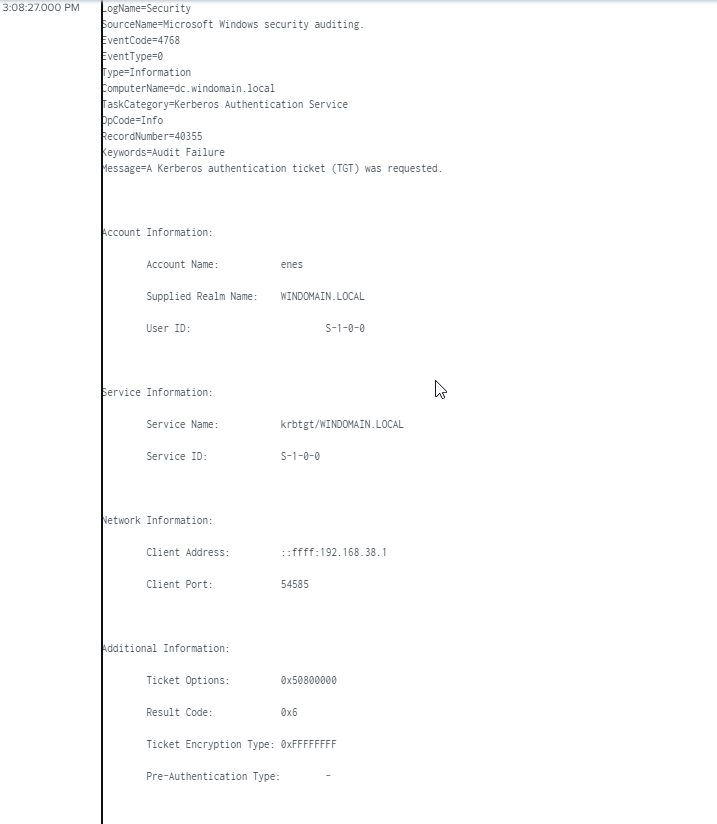
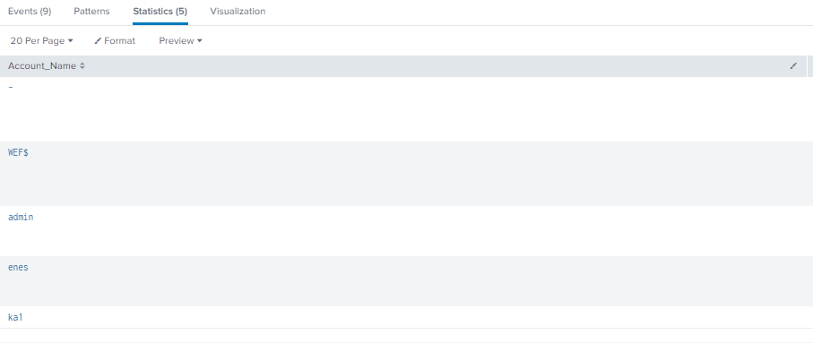
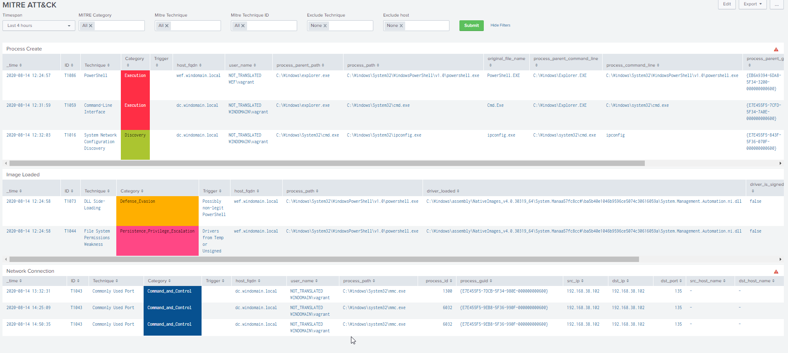

AS-Rep Roasting Saldırısı, Saldırıyı anlamak ve Tespiti
Written on
Giriş
Selamlar, bu aralar Active Directory tarafında ki saldırı vektörleri veya bunların tespiti ilgimi oldukça fazla çekiyor. Bazı kişi ve yayınları liste dışı tutarak bizim sektörde genel kitlenin hep Linux'a yönlendirildiğini görüyorum/uz bana göre bu biraz hatalı bir yönlendirme gibi geliyor. Çünkü ileride Internal Pentester/Red Team olacak kişi birden kurumsal ortamı görünce kelimenin tam anlamıyla sudan çıkmış balığa dönüyor (Like me). Çoğu zaman da feed listemde benzer yazılar görüyorum fakat bu yazıları Türkçe kaynaklarda arattığımda herhangi bir sonuca ulaşamıyorum. Bu sebeple ilgili yazıyı biraz çeviri biraz araştırma biraz da kendimin kattığı şeyler ile hazırlamak istedim. Aslında işin teknik kısmı çok da uzun değil fakat öncesinde bilinmesi gerekenler uzun sanırım :)
Bir hata vs. görürseniz bildirmekten çekinmezseniz sevinirim. Hadi başlayalım.
Direkt olarak AS-REP Roasting'i göstermek yerine nasıl tespit edebileceğimizi, nasıl sömürebileceğimizi göstermek istedim. Bu sebeple öncelikle öğrenmemiz gereken bir kaç şey bulunuyor.
Kerberos Nedir?
Basit bir anlatımla network üzerinden yetkilendirme yapan bir sistemdir. Kendisi bu yetkilendirmeyi client-server ilişkisi içerisinde yapar. Simetrik anahtar şifreleme kullanır ve güvenilir bir 3. doğrulayıcıya ihtiyaç duyar. Ticket bazlı bir sistemdir. Ağ üzerinde gerçekleşen trafikte parolalar değil ticketlar kullanılır. Ayrıca ticketlar için Windows ve Linux tarafında farklı implementasyonlar kullanır.
Ek bilgi:
Kerberos ticketları OS'lar genelinde farklı implementasyonlara sahiptir. Windows tarafında KIRBI denilen bir format kullanılırken Linux tarafında CCACHE formatı kullanılmaktadır. Eski linux sistemlerde bu keyler /tmp dizini altında tutulurken modern RedHat sistemlerde SSSD tarafından yönetilmekte olup, Kerberos Cache Manager tarafından şifrelenmiş bir biçimde /var/lib/sss/secrets/secrets.ldb altında durmaktadır. Key ise bu klasör altında gizli dosya içerisindedir.
Not: Ana konumuz kerberos olmadığı için bu kısım kısa tutulmuştur.
Not 2: Daha fazla Türkçe bilgi için @mdisec(Mehmet İnce)'nin yayınlarına katılan üstad @BarknKilic 'ın anlatımına MDISEC Github linki altında Network hacker kısmından ulaşabilirsiniz.
Daha fazla detay için:
Kerberos Pre Authentication Nedir
Kendisi Kerberos içerisinde ki bir kavramdır. Aşağıda belirtilen 6113 RFC'si ile tanımlanmıştır.
Temelde kendisinin çıkış amacı aslında bir güvenlik özelliğidir. Parola tahmin etme saldırılarından etkilenmemek için çıkartılmıştır. Bunu da şöyle sağlar. KDC(Key Distribution Center)'a düz metin olarak bir AS_REQ isteği gönderir. Eğer konumuz olan Pre Authentication değeri Enabled(Default olan ve güvenli olan) ise trafik aşağıdaki şekilde gerçekleşmektedir.

Generalized Framework for Kerberos Pre-Authentication
The Kerberos Network Authentication Service (V5)
Kapalı Kullanıcıların Tespiti
Eğer bir kullanıcının Pre Authentication Required seçeneği disable'a çekilmişse aşağıda ki gibi bir log üretmektedir. 0x10 değeri disabled hali 0x10010 değeri ise enabled halidir. Bizim burada yakalamamız gereken değer Enabled olduğunda kural üretmektir.
Old UAC Value: 0x10
New UAC Value: 0x10010
User Account Control:
'Don't Require Preauth' - Enabled
User Parameters: -
SID History: -
Logon Hours: -

Eğer loglardan değil de bulunduğunuz bir sistem üzerinde tespit etmek isterseniz de 2 seçeneğimiz bulunuyor.
LDAP Toolkit indirerek DC üzerinde aşağıdaki sorgu ile kontrol edebilirsiniz. Burada PreauthNoRequired kısmını sorgulayan asıl kod userAccountControl:1.2.840.113556.1.4.803:=4194304 kısmıdır.
LDAP:
searchBase="DC=EXAMPLE,DC=COM" filer="(&(objectCategory=person)(objectClass=user)(userAccountControl:1.2.840.113556.1.4.803:=4194304))" scope="SUBTREE" timeLimit="0" countLimit="1000" aliasesDereferencingMethod="ALWAYS" referralsHandlingMethod="IGNORE"
PowerShell üzerinde ise Get-DomainUser -PreauthNoRequired sorgusu ile domain üzerinde ki kullanıcıları listeleyebilirsiniz.

Daha fazlası için: LDAPWiki Risks Pre-Authentication
searchBase="DC=EXAMPLE,DC=COM" filer="(&(objectCategory=person)(objectClass=user)(userAccountControl:1.2.840.113556.1.4.803:=4194304))" scope="SUBTREE" timeLimit="0" countLimit="1000" aliasesDereferencingMethod="ALWAYS" referralsHandlingMethod="IGNORE"
AS-REP Roasting Nedir
AD üzerinde eski versiyonlara yönelik uyumluluk veya ihtiyaçlar sebebiyle bilerek açılmış olan Do not require Kerberos Pre Authentication seçeneğine sahip kullanıcılara ait RC4 keylerinin direkt olarak KDC üzerinden çekilmesi ve sistemler üzerinde Brute Force dair herhangi bir iz bırakmadan hashcat veya john gibi parola kırma araçları ile offline olarak bu parolanın kırılmasına verilen isimdir.
Eğer bir saldırgan olmayıp normal bir AS-REP göndermiş olsaydık network trafiğinde aşağıdaki gibi bir çıktı görecektir.

Bunun sonucu olarak da aşağıdaki gibi bir çıktı görecektir.

Fakat bir saldırgan olduğumuzdan doğal olarak işleri karıştırmak istiyoruz. AS-REP roasting için bir çok tool kullanabilirsiniz. Ben aşağıya 2 seçenek ekleyeceğim fakat 1 tanesini kullanacağım.
- Rubeus
- Impacket
Öncelikle bizim bu saldırı vektörünü yapabilmemiz için bir kullanıcı listesine ihtiyacımız var. Bu sebeple bir dosya yaratıp ben içerisinde 2-3 tane user ekliyorum. Ekliyorum çünkü neden olmasın? Evet bu kadar. Saldırı vektörümüzü çalıştırmaya hazırız. Bunun için aşağıdaki gibi bir komut yeterli olacaktır.
Impacket examples içerisinde bulabilirsiniz
python3 GetNPUsers.py windomain.local -usersfile usernames.txt -format hashcat -outputfile hash.asrep
Aşağıda ekran görüntüsünde göreceğiniz üzere bazılarında hata aldık çünkü Kerberos DB üzerinde ilgili kullanıcıları bulamadı fakat bizim 3 tane kullanıcımız vardı. Bize 2 tane hata çıkartılmış o sebeple diyebiliriz ki 1 tanesine ait hash'i elde ettik.

Şimdi bu trafiğin WireShark üzerinde nasıl gözüktüğüne bakalım.

Evet Impacket ile yaptığımız saldırı sonucunda elimizde bir hashimiz var ve bu hashi kırmak için elimizde tam da ona uygun çıktısıyla bir araç var ismi hashcat. Kendisi ile ilgili bir çok yazı bulabilirsiniz. AS-REP isteğimiz sonucu dönen değeri kırabilmek için kendisi üzerinde öntanımlı bir hash tipi ve ID'si bulunmaktadır.
Hashcat üzerinde 18200 ID'li hash tipi ile kırabilirsiniz.
.\hashcat.exe --help | findstr 18200
18200 | Kerberos 5, etype 23, AS-REP | Network Protocols
Normal AS-REP ve zararlı AS-REP trafiğini görebileceğiniz network trafiğine ait PCAP dosyasını aşağıdan indirebilirsiniz.
Nasıl yakalarım?
Normal yaptığım bağlantılarda Ticket Encryption Type olarak Windows sitesinde belirtilen Encryption Type değerlerini görüyor olsam da AS-REP Roasting yaptığım kullanıcılarda sadece 0xFFFFFFFF değerini görmekteyim. Ayrıca yapılan tüm aktivitelerde Service_Name olarak loglar içerisinde krbtgt/WINDOMAIN.local değeri geçmektedir. Normal olanları kontrol ettiğimde ise böyle bir değer değil direkt olarak krbtgt servisi geçmektedir.
Ekran görüntüleri:
Normal Kerberos Aktiviteleri

Saldırı zamanı Kerberos Aktiviteleri 
Ticket Encryption Type 
Splunk MITRE ATT&CK
Splunk üzerinde Threat Hunting modüle ait MITRE tarafında ben herhangi bir tanımlama veya tetiklenme göremedim(Default değerler geçerlidir.). Belki de Splunk üzerinde yeni olduğumdan olabilir fakat ekran görüntüsünü aşağıya koyuyorum.

Fakat Default değerlerin geçerli olmadığı örnek bir yazı ile tespitini aşağıya bırakıyorum.
Differences between Kerberoasting and AS-REP Roasting
Not: Tüm yazıda detection, monitoring ve DC ortamı için DetectionLab kullanılmıştır.
Yazı Sonu
Umarım beğenmişsinizdir. Eğer yanlış bir bilgi varsa doğru bilgi vermekle mükellef değilim:P ama siz yine de bana geri dönüş sağlayın ki hataları en aza indirelim.
Okuduğunuz için teşekkür ederim.
Geleneğim olan yazı sonu şarkısı:

Referans ve kaynaklar:
https://directory.apache.org/apacheds/kerberos-ug/4.1-authenticate-kinit.html
https://blog.stealthbits.com/cracking-active-directory-passwords-with-as-rep-roasting/
https://www.tarlogic.com/en/blog/how-to-attack-kerberos/